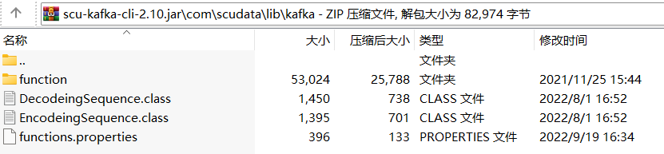

Description:
Connect to Kafka server.
Syntax:
kafka_open(filename or fileObject, topic,..., partitionSize)
Note:
The external library function (See External Library Guide) connects to Kafka server, and stores attribute parameter properties in the configuration file with extension .properties.
Parameter:
|
topic |
Query one or more specified topics |
|
filename |
The attribute parameter file with the extension .properties, which contains the send key, value encoding and message decoding; all of them should correspond to each other one by one |
|
fileObject |
A file object |
|
partitionSize |
The number of partitions in a topic; if a corresponding topic already exists, ignore the parameter, which means SPL does not support changing the partition size in a topic |
Return value:
Connection object
Example:
|
|
A |
|
|
1 |
=kafka_open("D://kafka.properties","topic-test") |
Connect topic-test’s configuration file kafka.properties to Kafka server using a topic. |
|
2 |
=kafka_open(file("D://kafka.properties"),"topic-test",3) |
Connect topic-test’s configuration file kafka.properties to Kafka server using a file object. |
|
3 |
=kafka_close(A1) |
|
Below is the content of D://kafka.properties:
##produce
bootstrap.servers=192.168.0.1:9092
producer.type=sync
request.required.acks=1
serializer.class=kafka.serializer.DefaultEncoder
key.serializer=org.apache.kafka.common.serialization.StringSerializer
value.serializer=org.apache.kafka.common.serialization.StringSerializer
##consume
group.id=test
zookeeper.session.timeout.ms=1000
zookeeper.sync.time.ms=200
auto.commit.interval.ms=500
# Manual mode; auto.commit.interval.ms is invalid
enable.auto.commit=false
auto.offset.reset=earliest
key.deserializer=org.apache.kafka.common.serialization.StringDeserializer
value.deserializer=org.apache.kafka.common.serialization.StringDeserializer
Explanations of user-defined coding and
decoding:
Put the jar containing encoding and decoding information in
exlib\KafkaCil directory, as shown below:

In raq-kafa-cil-2.10.jar, the encoding file is EncodeingSequence.class,
the decoding file is DecodeingSequence.class, and their corresponding
record object is Sequence.
Below are configurations
of user-defined encoding and decoding in .properties file:
key.serializer=org.apache.kafka.common.serialization.StringSerializer
value.serializer=com.scudata.lib.kafka.EncodeingSequence
key.deserializer=org.apache.kafka.common.serialization.StringDeserializer value.deserializer=com.scudata.lib.kafka.DecodeingSequence